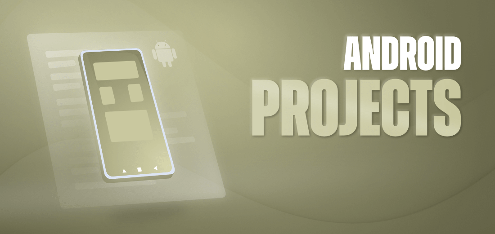

Android is an operating system based on a modified version of the Linux kernel, and it was primarily designed for touchscreen mobile devices such as smartphones and tablets. It is known to everyone that building projects in Android play the most important role for any android developer. Because the best way to learn Android is by developing some basic projects to some advanced projects.
Create a simple calculator which can perform basic arithmetic operations like addition, subtraction, multiplication, or division depending upon the user input.
A sample video is given below to get an idea about what we are going to do in this article. Note that we are going to implement this project using the Java language.
This is a very simple app suitable for beginners to learn the concepts. The following pre-requisites is good enough before starting.
-> Android fundamentals for beginners
-> Install and Set up Android Studio
-> First android app project
-> How to Run your first Android app
We will be building a simple application in which we will be getting IFSC code from the user via an EditText and after that, the user has to click on a simple button to get the data from that IFSC code such as Bank address, bank MICR code, contact number, and other details.
For performing this task we will be using a simple API which we will be added to our application. This application will provide us the basic data from API which is related to the bank. Below is the GIF image in which we will get to see what we are going to build in this article. Note that we are going to implement this project using the Java language.
In this project, we will be building a Tic Tac Toe Game Project using Java and XML in Android. The Tic Tac Toe Game is based on a two-player game. Each player chooses between X and O. Player play one move at a time simultaneously. In a move, a player can choose any position from a 3×3 grid. The goal here is to get three consecutive X or O in a horizontal, vertical, or diagonal direction. There will be a single activity in this application.
A simple Quiz App that contains a set of curated questions and its answers and checks for the correctness of the answer given by the user. It navigates through the questions using dynamic programming.
We all have once used the MS-Paint in our childhood, and when the system was shifted from desks to our palms, we started doodling on Instagram Stories, Hike, WhatsApp, and many more such apps. But have you ever thought about how these functionalities were brought to life? So, In this project, we will be discussing the basic approach used by such apps and will create a basic replica of such apps.
Pre-requisites:
-> Android App Development Fundamentals for Beginners
-> Guide to Install and Set up Android Studio
-> Android | How to Create/Start a New Project in Android Studio?
-> Android | Running your first Android app
-> REST API (Introduction)
-> Volley Library in Android
Cryptography is a technique of securing information and communications through the use of codes so that only those people for whom the information is intended can understand it and process it. Thus preventing unauthorized access to information. The prefix “crypt” means “hidden” and suffix graphy means “writing”.
We have seen many apps and websites in which we will get to see a chatbot where we can chat along with the chatbot and can easily get solutions for our questions answered from the chatbot. In this article, we will take a look at building a chatbot in Android.
Source Code : ChatbotWe will be building a simple application in which we will be capturing an image from our device camera and after that, we will click on the Button to get the results for that product. A sample video is given below to get an idea about what we are going to do in this article. Note that we are going to implement this project using the Java language.